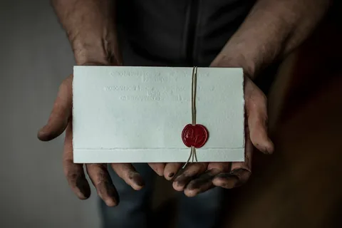

В начале ты подписал договор и завёл тетрадь дела, теперь ты впервые попробуешь заработать и для этого научишься главному умению: видеть то, чего не видят другие.
Преподаватель предпринимательства в одном из сильнейших университетов США однажды разделила студентов на 14 команд и дала каждой конверт с пятью долларами. Обдумывать план разрешалось сколько угодно, но с момента, когда команда вскрывала конверт, у неё оставалось два часа, чтобы заработать как можно больше. В следующий понедельник каждая команда должна была выйти перед всей группой и за три минуты рассказать, что она сделала.
Остановись. Запиши в тетрадь, что сделал бы ты с пятью долларами и двумя часами. Потом читай дальше.
Первое, что предлагает почти каждый, это купить на пять долларов всё для лимонада и продать его дороже. Такие команды зарабатывали очень мало. Одна команда купила зонты, чтобы продавать их в дождь, но небо прояснилось, и она осталась в убытке.
Лучшая команда принесла 650 долларов, и пять долларов ей не понадобились. Её участники стали разбираться, что ценного у них есть на самом деле. Пять долларов стоят мало, два часа тоже. Самым ценным оказались три минуты в понедельник: перед командой будет сидеть вся группа студентов сильного университета, а таких студентов хотят нанять многие компании.
Команда нашла компанию, которая искала сотрудников среди студентов этого курса, и предложила ей сделку: компания платит, а команда показывает её рекламу всей группе. Компания заплатила. Команда сделала рекламный ролик на три минуты и в понедельник показала его вместо обычного рассказа о своей работе.
Три минуты на выступление преподаватель выделила самой команде, и команда сама распорядилась своим временем. Преподавателя это не возмутило: решение этой команды она считает лучшим за всё время задания. Команда заработала на том, что у неё уже было и что остальные даже не считали товаром.
Другие сильные команды тоже обошлись почти без денег. Одна заранее забронировала столики в ресторанах, куда по выходным стоит очередь, и продала эти места тем, кто не хотел ждать. Другая встала у студенческого городка и проверяла давление в велосипедных шинах за доллар. Потом команда перестала называть цену и стала просить заплатить, сколько человек считает нужным. Денег стало заметно больше.
Теперь твоя очередь. Задача та же: за два часа заработать как можно больше. Главное в ней не сумма, а находчивость: увидеть то, чего не видят другие. Лимонад видели все. Очередь, спущенные шины и три минуты в понедельник увидели единицы.
Родители дают тебе конверт с 300 рублями. Можешь потратить их на дело, можешь не трогать: команде из истории деньги не понадобились. Потраченное вернёшь родителям из заработанного.
Сильные команды смотрели не на свои пять долларов, а вокруг. Они искали ответы на четыре вопроса:
Чтобы найти ответы, не надо сидеть и думать. Надо пройтись. Возьми тетрадь и ручку и обойди четыре точки, на каждой по три-четыре минуты:
На каждой точке задай себе четыре вопроса и запиши хотя бы одну находку: кто здесь ждёт, что здесь закрывается в неудобный час, за что здесь платят, хотя людям неудобно, и что ты здесь проходишь каждый день и не замечаешь.
Если не знаешь, с чего начать, посмотри этот список. Это обычные дела, за которые соседи и знакомые семьи охотно платят:
Это подсказка, а не готовый ответ. Лучшая находка та, которой нет в списке и которую ты увидел сам на своём маршруте.
Твой маршрут проходит по своему дому, двору и местам, где тебя знают. Помощь предлагай соседям и знакомым семьи. Работаешь у подъезда, во дворе, у двери квартиры, а внутрь к людям не заходишь. Родители знают, где ты, и ты держишь телефон включённым.
Можешь пройти маршрут шире: по своей улице, мимо небольших магазинов, мастерских и кафе. Можешь предложить работу владельцу: разложить товар, расчистить вход от снега, сфотографировать товары для объявлений. Можешь выставить свою услугу в районном чате или на доске объявлений. Встречи только в общественных местах, и домой к незнакомым людям ты не ходишь.
На маршруте Тимоха заметил, что у магазина у дома пенсионеры тащат пятилитровые бутылки воды и тяжёлые пакеты, а в подъезде висит объявление, что лифт отключат на ремонт. Он записал и то, чего раньше не замечал: бабушка и Николай Петрович каждую неделю просят его «разобраться с телефоном». Тимоха зашёл к хозяйке магазина и предложил сделку: в субботу с 10 до 12 он доносит покупки до подъезда за 50 рублей, кассир говорит о нём покупателям, а магазину это ничего не стоит. Хозяйка согласилась, Тимоха выполнил пять заказов, конверт не открыл и заработал 270 рублей. Двое покупателей спросили, разбирается ли он в телефонах, и эту находку он подчеркнул в тетради.
Заработай за два часа как можно больше честным делом. Заработал ноль рублей: поставь таймер ещё на час.
Страница 1 называется «Конверт». Запиши:
Ответ. она увидела ценность в том, что у неё уже было и что остальные даже не считали товаром.
Находчивость — это умение увидеть ценность там, где другие видят пустое место: в очереди, в неудобном часе, в чужой досаде, в своей привычной обязанности. Деньги на старте почти ничего не решают. Самое ценное у тебя часто лежит рядом и не похоже на товар.
В прошлом шаге ты увидел, за что соседи готовы платить, теперь посмотришь тем же взглядом на свой дом: там тоже есть то, чего никто не замечает, и это деньги, которые каждый месяц уходят впустую.
Пока деньги приходят по просьбе, тебе незачем думать, откуда они берутся. Посмотри честно: сейчас ты главный клиент своих родителей. Они решают твои проблемы круглосуточно и бесплатно. Предприниматель устроен наоборот: он решает чужие проблемы, и за это ему платят. Чтобы стать им, сначала перестань быть клиентом.
На этой неделе ты не просишь денег, а приносишь их. Почти в каждой семье есть траты, которые все давно перестали замечать: подписка, которую оформили год назад и забыли, тариф, который больше, чем нужен, платная доставка маленьких заказов. Деньги уходят тихо, раз в месяц, и никто их не видит. Ты их найдёшь.
Ты предлагаешь родителям первую в жизни сделку: «Если я найду, как сэкономить, половина экономии за первый месяц — моя». Это не просьба. Ты приносишь семье пользу и получаешь за неё свою долю. Платят за пользу, которую ты принёс, а не за то, что попросил.
Проверяй только вместе с родителями и только семейные траты. Сам ничего не нажимаешь и не отменяешь. Можно начать с самого простого: родители открывают в телефоне раздел «Подписки» в настройках или в магазине приложений, и вы вместе смотрите, что там есть.
Можешь сам сравнить тарифы связи и интернета на сайтах операторов, найти пункт выдачи у дома, прочитать на сайте банка, какие услуги платные. Принеси родителям готовый вариант: что отключить, на что перейти и сколько это даст в месяц. Звонит оператору и в банк тот, на кого оформлен договор.
Тимоха не стал ждать, пока мама найдёт время: он сам посмотрел тарифы семьи на сайте оператора и пришёл к маме с готовым листом. На листе было три строки: онлайн-кинотеатр оплачен дважды, на мамином и на бабушкином телефоне; у бабушки тариф с большим пакетом гигабайт, а она только звонит; мама платит за сообщения о покупках, хотя всё видит в приложении. Вместе выходило около 750 рублей в месяц. Сделку Тимоха записал в тетрадь, и мама под ней расписалась. Мама отключила вторую подписку и сменила бабушке тариф, а сообщения оставила, экономия вышла 500 рублей в месяц, и в конце месяца Тимоха получил свои 250.
Семь дней не проси денег сверх еды, проезда и школы. За эту неделю найди в семейных тратах хотя бы одну утечку и заключи с родителями сделку. Шаги 3–7 ты выполняешь внутри этих семи дней, чтобы деньги были тебе нужны по-настоящему.
Страница 2 называется «Утечки». Запиши:
Ответ. экономия — это польза, которую ты принёс семье. Платят за пользу, а не за просьбу.
Платят за пользу, которую ты принёс, а не за то, что попросил. Ты впервые принёс семье деньги, не выходя из дома. Теперь разберёмся, как деньги приходят в дом и как зарабатывают взрослые вокруг тебя.
В прошлом шаге ты нашёл деньги, которые утекают из дома, теперь узнаешь, как они в дом приходят.
Любые деньги, которые ты видел, кто-то заработал одним из трёх способов.
Многие взрослые совмещают два способа, а то и три. Плохого способа здесь нет, но они устроены по-разному. Зарплата похожа на ведро воды: потратил, и оно пустое, пока снова не наполнишь его своим трудом. Своё дело или имущество похоже на реку: вода течёт, даже когда ты занят другим. Почти всех учат только наполнять ведро.
Разговаривай только со знакомыми семьи. Пусть родители позвонят им первыми и предупредят, что ты задашь три вопроса. Если в семье нет никого, кто сдаёт имущество, спроси родителей или бабушку про вклад в банке: проценты по вкладу тоже доход от имущества.
Одного из трёх людей найди вне семьи: например, хозяина мастерской или кафе у дома. Подойди в спокойное время, когда нет покупателей, и сначала спроси, удобно ли сейчас говорить.
Мама Тимохи работает бухгалтером в поликлинике и продаёт своё время. Хозяйка магазина у дома, с которой он договорился в шаге 1, продаёт результат: Тимоха попросил у неё десять минут в тихое время и задал три вопроса. Бабушка сдаёт соседу гараж, который остался от дедушки, и получает доход от имущества. Мама сказала, что в его возрасте начала бы откладывать деньги, хозяйка магазина сказала, что работает больше, чем на любой работе, зато сама решает, а бабушка сказала: «За гараж деньги приходят каждый месяц, а я ничего не делаю». Тимоха записал три суммы: 2 500 рублей на свои покупки, около 18 000 на всю свою жизнь и 3 000 на помощь семье. Он решил начать со своего дела, а потом прийти к имуществу.
Поговори с тремя людьми, по одному на каждый способ заработка, и запиши свои три суммы.
Страница 3 называется «Три способа». Запиши:
Ответ. ведро пустеет, пока ты снова не наполнишь его своим трудом, а река течёт, даже когда ты занят другим.
Деньги приходят тремя способами: за время, за результат и от имущества. У тебя есть три суммы и способ, к которому ты хочешь прийти. Теперь посчитай, кому ты бесплатно отдаёшь своё время.
В прошлом шаге ты узнал, что многие взрослые продают своё время, теперь посчитаешь, сколько своего времени ты отдаёшь бесплатно.
Исследователи спросили тысячи пользователей, за сколько они согласятся отключить одну большую социальную сеть на четыре недели. Половина назвала 100 долларов или больше [18]. А сама соцсеть получает эти часы от людей бесплатно и зарабатывает на них, показывая рекламу. Внимание покупают и продают, как три минуты в шаге 1. Ты платишь за ленту не деньгами, а часами.
Сутки без ленты удобнее прожить в выходной. Вещь сделай для того, кого знает семья: для бабушки, соседа, младшей сестры или брата, учителя.
Вещь можно сделать для тренера с завалом работы, для библиотеки или небольшого магазина у дома: например, подборку фото товаров или короткую инструкцию для покупателей.
У Тимохи вышло три с половиной часа в день: 24,5 часа в неделю и 53 дня в год. Сутки без ленты он оценил в 1 000 рублей и прожил их в тот же день. На освободившиеся часы он сделал Николаю Петровичу крупные буквы на телефоне и кнопки с фотографиями родных на главном экране. Через день сосед сам позвонил сыну и сказал: «Теперь вижу без очков». Тимоха спросил, что ещё не получается, и услышал: звонить внуку по видео сосед так и не научился.
Посчитай свои сутки в ленте, проживи одни сутки без неё и сделай одну полезную вещь для человека, которому некому помочь.
Страница 4 называется «Моё время». Запиши:
Ответ. она показывает тебе рекламу и получает деньги за твоё внимание. Ты платишь ей своими часами.
Теперь у твоего внимания есть цена, и чужая компания получала его даром. Освободившееся время ты потратишь на поиск проблем, за решение которых платят.